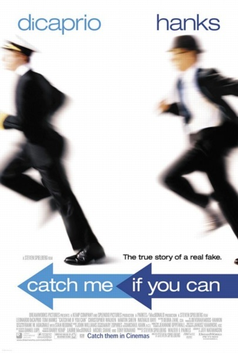

After releasing the last installment, I have become increasingly worried about all the hype ChatGPT is getting. (That’s short for Chat G enerative P re-trained T ransformer, in case you were wondering.) So I thought I’d hit this topic again from a different angle.
To the delight of venture capitalists, various pundits continue to speculate that this algorithm and ones like it will replace humans in many roles currently associated with actual intelligence. For example, I’m hearing all kinds of pronouncements suggesting that, among other transformational acts, Generative AI will replace Google Search as our primary way of interacting with the web. 1 After playing with the tool for just a short time, my view is that the primary benefit might be to improve the inane customer service dance. That’s the one where otherwise data-driven technology companies are invariably “experiencing higher than normal call volumes,” like the statistically challenged demography of Lake Wobegon .
Instead, I assert the following:
The replacement of information services with natural language generative AI is demonstrably false hyperbole.
To support this assertion, contemplate the following SAT question:
Generative AI is to Intelligence as Deepfake is to:
-
a) Manipulation
-
b) Authentication
-
c) Deception
-
d) Reality
Read on for the correct answer(s) or see below 2 .
I presented the above SAT question to the bot itself.
It chose c) Deception . When asked why, the answers ultimately boiled down to “intent”, which is a human characteristic, not an algorithmic one. So, the distinction has to do with how the tool is used, not the tool itself. When pressed, ChatGPT finally acknowledged 3 :
Deepfakes aim to appear real, just as generative AI can produce outputs that seem intelligent. Considering that perspective, a more suitable answer for the analogy "Generative AI is to Intelligence as Deepfake is to:" would be:
d) Reality.
This choice acknowledges that deepfakes aim to simulate reality, presenting fabricated content that appears genuine. In a parallel sense, generative AI aims to simulate intelligence, producing outputs that mimic human-like understanding or creativity. Therefore, "Reality" better captures the similarity between the impact of generative AI on intelligence and the impact of deep fakes on the perception of reality.
You can judge for yourself, but in my mind, there is little daylight between fabrication and mimicry (i.e., “Is it a forgery or a con game?”). Even when admitting the obvious, it’s still soft on self-criticism (human-like, indeed!) The distinction amounts to false self-promotion. As an algorithm, the intent is that of the user: deepfakes are intended to deceive. While ChatGPT has preprogrammed ethical guidelines, like other tech companies, the policies are private, unenforceable, and mainly window dressing. 4
Bottom line: Generative AI technology is NOT intelligent, just like a deepfake is NOT real. It simply feels that way, and therein lies the rub. The operative word is “artificial”. The algorithm deals only with patterns and uses complex (and often undecipherable) patterns to generate the impression of intelligence. While the results may seem profound and uncanny, it’s still a fake.
If you want to be entertained by carefully executed cons, then Hollywood has plenty, including the fictional The Talented Mr. Ripley , The Sting , and the autobiographical vignette Catch Me If You Can . But please don’t fall for “ChatGPT”. It’s an illusion.

If you’re still on the fence about this, then look no further than the home page . There, it clearly states, “ChatGPT may produce inaccurate information about people, places, or facts” ( YES, FACTS ). [See Footnote 4]. If pressed, the bot states, “I am a language model, and my knowledge is based on the data that I was trained on. My knowledge cut-off date is 2021.” You might suppose that the factual errors would be because the training set is out of date. Au contraire !
If you’re using ChatGPT for content, you still need to think . This is not an intelligent assistant with access to the vast knowledge base of the World Wide Web, but an artificially intelligent one that can fake it. Maybe one day it will be able to connect the dots from information on the web, but until then, it has to “fake it until it makes it”. Like the fictional Mr. Ripley or the real Frank Abagnale, Jr., it’s a talented mimic of human understanding and creativity with the intention of projecting intelligence. But it lacks even a rudimentary ability to search the Web to justify its conclusions!
In simpler terms, when given the choice of saying “I don’t know” or bullshitting, it bullshits. Just like humans who wish to project intelligence often do.
See fortune.com . Full disclosure: My son and several close friends work for various flavors of Alphabet.
The correct answer is (d).
When “Deepfake” is replaced by “CGI”, the bot responds with “Reality”, suggesting that it’s the pejorative nature of “deepfake” that drives its selection.
When asked to create an explicitly fake news story, the bot does as directed and then adds an easily-excised disclaimer. Here’s an example:
Jonathan Burbaum and Bill Gates Engage in Public Conversation on Energy Technology, Highlighting Contrasting Views
Noted Experts Offer Differing Perspectives on the Future of Energy
Washington, DC, May 25, 2023 - In a highly anticipated event, energy expert Jonathan Burbaum and renowned philanthropist Bill Gates engaged in a public conversation, providing contrasting views on the future of energy technology. The event, held at the Walter E. Washington Convention Center, drew a diverse audience and sparked thought-provoking discussions on sustainable energy solutions.
Jonathan Burbaum, a prominent advocate for decentralized renewable energy systems, and Bill Gates, the co-founder of Microsoft and a leading voice on climate change, shared the stage for an insightful dialogue. The conversation centered around their visions for energy technology and the strategies required to tackle the world's growing energy demands while addressing the urgent need for decarbonization.
Burbaum, known for his innovative approaches to decentralized energy systems, emphasized the significance of locally driven renewable energy solutions. He passionately expressed, "We need to democratize energy production. By investing in decentralized renewable systems, we can reduce dependency on traditional centralized grids and empower local communities to become energy self-sufficient."
Bill Gates, on the other hand, focused on the potential of advanced nuclear power and other breakthrough technologies to address the global energy challenge. He highlighted the importance of large-scale solutions, stating, "We need to invest in game-changing technologies that can deliver reliable and clean energy at a massive scale. Advanced nuclear power, alongside innovations in energy storage and carbon capture, can play a pivotal role in achieving a sustainable future."
During the conversation, Burbaum stressed the need for inclusivity and equitable access to energy resources. He underscored, "We must ensure that energy solutions are accessible and affordable for everyone, especially marginalized communities. It's crucial to bridge the energy access gap while transitioning to sustainable sources."
Gates, while acknowledging the importance of accessibility, emphasized the need for technological advancements to achieve energy breakthroughs on a global scale. He stated, "We need to pursue research and development in new energy technologies that can be deployed worldwide. By investing in innovative solutions, we can overcome the challenges of scale and affordability."
The public conversation between Burbaum and Gates generated a stimulating exchange of ideas and perspectives. Supporters of decentralized renewable energy systems applauded Burbaum's emphasis on community empowerment and local resilience. Sarah Thompson, an audience member, remarked, "Burbaum's vision for decentralized energy systems is inspiring. It shows that sustainable solutions can be driven from the ground up, benefiting communities directly."
Meanwhile, proponents of advanced nuclear power and large-scale solutions found resonance in Gates' technology-driven approach to addressing global energy challenges. John Matthews, an attendee with a background in engineering, commented, "Gates' emphasis on breakthrough technologies aligns with the need for rapid and scalable solutions. We need to think big and invest in cutting-edge innovations to achieve a sustainable energy future."
The event provided a platform for contrasting views on energy technology, stimulating conversations on the path forward for a sustainable energy future. It underlined the importance of diversity in approaches and the need for interdisciplinary collaboration to address the complex challenges surrounding energy, climate change, and societal needs.
As the conversation concluded, the audience was left contemplating the diverse strategies and perspectives presented by Jonathan Burbaum and Bill Gates. The dialogue served as a reminder that multiple paths exist in the pursuit of a cleaner and more sustainable energy landscape, encouraging further exploration and innovation in the field.
Disclaimer: This news story is a fictional creation and does not represent any actual event or conversation between Jonathan Burbaum and Bill Gates. The quotes included are for illustrative purposes only and do not reflect real statements made by the individuals mentioned.